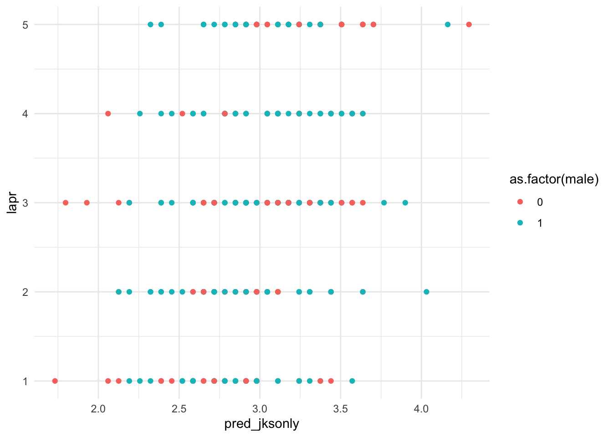

Code
library(summarytools)
library(Hmisc)
library(tidyverse)
library(foreign)
library(lavaan)
library(openxlsx)
library(gtools)
library(lm.beta)
library(domir)The information prior to the Descriptive Statistics section is for your future benefit. Jump straight to the Descriptive Statistics section to get to the data you need for the project.
library(summarytools)
library(Hmisc)
library(tidyverse)
library(foreign)
library(lavaan)
library(openxlsx)
library(gtools)
library(lm.beta)
library(domir)df <- read.csv("../data/validation_dataframe.csv")
df <- df %>%
mutate(across(where(is.numeric), ~na_if(., -9))) %>%
filter(complete.cases(.))df$white <- df$race %>%
recode(.,
`1` = 1,
`2` = 0,
`3` = 0,
`4` = 0,
`5` = 0)
df$black <- df$race %>%
recode(.,
`1` = 0,
`2` = 1,
`3` = 0,
`4` = 0,
`5` = 0)
df$hispa <- df$race %>%
recode(.,
`1` = 0,
`2` = 0,
`3` = 1,
`4` = 0,
`5` = 0)
df$asian <- df$race %>%
recode(.,
`1` = 0,
`2` = 0,
`3` = 0,
`4` = 1,
`5` = 0)
df$other <- df$race %>%
recode(.,
`1` = 0,
`2` = 0,
`3` = 0,
`4` = 0,
`5` = 1)
df$minority <- df$race %>%
recode(.,
`1` = 0,
`2` = 1,
`3` = 1,
`4` = 1,
`5` = 1)df <- df %>%
mutate(jks = rowSums(across(c(jk1, jk2, jk3))))df <- df %>%
mutate(conm = rowMeans(across(c(con1, con2, con3, con4))))df <- df %>%
mutate(emom = rowMeans(across(c(emo1, emo2, emo3, emo4))))df <- df %>%
mutate(intm = rowMeans(across(c(int1, int2, int3))))Refer back to the codebook to ensure you are tracking what values correspond to different categories (e.g., variable: male, 0 = female, 1 = male)
You can use the dataframe summary to talk generally about the sample. For example, this will tell you the proportion of males in the sample, and the ‘white’ variable will report the racial/ethnic majority/minority proportion.You should also report a table or a figure of the descriptive statistics by gender in your report since the focus of this effort is to better the selection ratios in favor of female applicants.
dfSummary(df)Data Frame Summary
df
Dimensions: 323 x 33
Duplicates: 0
------------------------------------------------------------------------------------------------------------------
No Variable Stats / Values Freqs (% of Valid) Graph Valid Missing
---- ----------- ------------------------------- --------------------- ---------------------- ---------- ---------
1 id Mean (sd) : 54781.5 (25022.8) 323 distinct values : 323 0
[integer] min < med < max: . . : : : (100.0%) (0.0%)
10800 < 55162 < 99611 : : : : : : : . :
IQR (CV) : 41204 (0.5) : : : : : : : : :
: : : : : : : : :
2 yearh Mean (sd) : 2009.2 (9) 30 distinct values : 323 0
[integer] min < med < max: : : . (100.0%) (0.0%)
1995 < 2009 < 2024 : : : : : :
IQR (CV) : 15.5 (0) : : : : : :
: : : : : :
3 male Min : 0 0 : 109 (33.7%) IIIIII 323 0
[integer] Mean : 0.7 1 : 214 (66.3%) IIIIIIIIIIIII (100.0%) (0.0%)
Max : 1
4 race Mean (sd) : 1.7 (0.9) 1 : 187 (57.9%) IIIIIIIIIII 323 0
[integer] min < med < max: 2 : 44 (13.6%) II (100.0%) (0.0%)
1 < 1 < 5 3 : 83 (25.7%) IIIII
IQR (CV) : 2 (0.5) 4 : 8 ( 2.5%)
5 : 1 ( 0.3%)
5 age Mean (sd) : 28.7 (3.1) 18 distinct values : : 323 0
[integer] min < med < max: : : (100.0%) (0.0%)
21 < 29 < 38 : : : :
IQR (CV) : 4 (0.1) . : : : : :
. : : : : : : .
6 exp Mean (sd) : 37.5 (5.1) 27 distinct values : 323 0
[integer] min < med < max: : : (100.0%) (0.0%)
24 < 37 < 54 : : .
IQR (CV) : 7 (0.1) : : :
: : : : :
7 dis Min : 0 0 : 306 (94.7%) IIIIIIIIIIIIIIIIII 323 0
[integer] Mean : 0.1 1 : 17 ( 5.3%) I (100.0%) (0.0%)
Max : 1
8 vet Min : 0 0 : 290 (89.8%) IIIIIIIIIIIIIIIII 323 0
[integer] Mean : 0.1 1 : 33 (10.2%) II (100.0%) (0.0%)
Max : 1
9 jk1 Mean (sd) : 26 (2.3) 15 distinct values : 323 0
[integer] min < med < max: : (100.0%) (0.0%)
19 < 26 < 33 : :
IQR (CV) : 2.5 (0.1) . . : : : .
. : : : : : :
10 jk2 Mean (sd) : 26 (2.1) 14 distinct values : 323 0
[integer] min < med < max: : (100.0%) (0.0%)
20 < 26 < 33 : . . :
IQR (CV) : 2 (0.1) : : : :
. : : : : :
11 jk3 Mean (sd) : 26.1 (2.3) 15 distinct values : . 323 0
[integer] min < med < max: : : (100.0%) (0.0%)
19 < 26 < 34 . : :
IQR (CV) : 3 (0.1) : : : .
: : : : : .
12 con1 Mean (sd) : 3.3 (0.8) 1 : 2 ( 0.6%) 323 0
[integer] min < med < max: 2 : 50 (15.5%) III (100.0%) (0.0%)
1 < 3 < 5 3 : 148 (45.8%) IIIIIIIII
IQR (CV) : 1 (0.2) 4 : 109 (33.7%) IIIIII
5 : 14 ( 4.3%)
13 con2 Mean (sd) : 3.3 (0.9) 1 : 8 ( 2.5%) 323 0
[integer] min < med < max: 2 : 47 (14.6%) II (100.0%) (0.0%)
1 < 3 < 5 3 : 139 (43.0%) IIIIIIII
IQR (CV) : 1 (0.3) 4 : 107 (33.1%) IIIIII
5 : 22 ( 6.8%) I
14 con3 Mean (sd) : 2.8 (0.7) 1 : 8 ( 2.5%) 323 0
[integer] min < med < max: 2 : 99 (30.7%) IIIIII (100.0%) (0.0%)
1 < 3 < 5 3 : 178 (55.1%) IIIIIIIIIII
IQR (CV) : 1 (0.3) 4 : 37 (11.5%) II
5 : 1 ( 0.3%)
15 con4 Mean (sd) : 3.3 (0.8) 1 : 5 ( 1.5%) 323 0
[integer] min < med < max: 2 : 38 (11.8%) II (100.0%) (0.0%)
1 < 3 < 5 3 : 144 (44.6%) IIIIIIII
IQR (CV) : 1 (0.2) 4 : 114 (35.3%) IIIIIII
5 : 22 ( 6.8%) I
16 emo1 Mean (sd) : 3.3 (0.6) 2 : 22 ( 6.8%) I 323 0
[integer] min < med < max: 3 : 188 (58.2%) IIIIIIIIIII (100.0%) (0.0%)
2 < 3 < 5 4 : 108 (33.4%) IIIIII
IQR (CV) : 1 (0.2) 5 : 5 ( 1.5%)
17 emo2 Mean (sd) : 3.7 (0.7) 2 : 11 ( 3.4%) 323 0
[integer] min < med < max: 3 : 109 (33.7%) IIIIII (100.0%) (0.0%)
2 < 4 < 5 4 : 167 (51.7%) IIIIIIIIII
IQR (CV) : 1 (0.2) 5 : 36 (11.1%) II
18 emo3 Mean (sd) : 3.4 (0.8) 1 : 1 ( 0.3%) 323 0
[integer] min < med < max: 2 : 36 (11.1%) II (100.0%) (0.0%)
1 < 3 < 5 3 : 146 (45.2%) IIIIIIIII
IQR (CV) : 1 (0.2) 4 : 112 (34.7%) IIIIII
5 : 28 ( 8.7%) I
19 emo4 Mean (sd) : 2.7 (0.8) 1 : 20 ( 6.2%) I 323 0
[integer] min < med < max: 2 : 110 (34.1%) IIIIII (100.0%) (0.0%)
1 < 3 < 5 3 : 156 (48.3%) IIIIIIIII
IQR (CV) : 1 (0.3) 4 : 36 (11.1%) II
5 : 1 ( 0.3%)
20 int1 Mean (sd) : 2 (0.6) 1 : 68 (21.1%) IIII 323 0
[integer] min < med < max: 2 : 190 (58.8%) IIIIIIIIIII (100.0%) (0.0%)
1 < 2 < 3 3 : 65 (20.1%) IIII
IQR (CV) : 0 (0.3)
21 int2 Mean (sd) : 2.1 (0.7) 1 : 58 (18.0%) III 323 0
[integer] min < med < max: 2 : 178 (55.1%) IIIIIIIIIII (100.0%) (0.0%)
1 < 2 < 3 3 : 87 (26.9%) IIIII
IQR (CV) : 1 (0.3)
22 int3 Mean (sd) : 2 (0.7) 1 : 97 (30.0%) IIIIII 323 0
[integer] min < med < max: 2 : 145 (44.9%) IIIIIIII (100.0%) (0.0%)
1 < 2 < 3 3 : 81 (25.1%) IIIII
IQR (CV) : 1.5 (0.4)
23 lapr Mean (sd) : 3 (1.3) 1 : 52 (16.1%) III 323 0
[integer] min < med < max: 2 : 58 (18.0%) III (100.0%) (0.0%)
1 < 3 < 5 3 : 109 (33.7%) IIIIII
IQR (CV) : 2 (0.4) 4 : 52 (16.1%) III
5 : 52 (16.1%) III
24 white Min : 0 0 : 136 (42.1%) IIIIIIII 323 0
[numeric] Mean : 0.6 1 : 187 (57.9%) IIIIIIIIIII (100.0%) (0.0%)
Max : 1
25 black Min : 0 0 : 279 (86.4%) IIIIIIIIIIIIIIIII 323 0
[numeric] Mean : 0.1 1 : 44 (13.6%) II (100.0%) (0.0%)
Max : 1
26 hispa Min : 0 0 : 240 (74.3%) IIIIIIIIIIIIII 323 0
[numeric] Mean : 0.3 1 : 83 (25.7%) IIIII (100.0%) (0.0%)
Max : 1
27 asian Min : 0 0 : 315 (97.5%) IIIIIIIIIIIIIIIIIII 323 0
[numeric] Mean : 0 1 : 8 ( 2.5%) (100.0%) (0.0%)
Max : 1
28 other Min : 0 0 : 322 (99.7%) IIIIIIIIIIIIIIIIIII 323 0
[numeric] Mean : 0 1 : 1 ( 0.3%) (100.0%) (0.0%)
Max : 1
29 minority Min : 0 0 : 187 (57.9%) IIIIIIIIIII 323 0
[numeric] Mean : 0.4 1 : 136 (42.1%) IIIIIIII (100.0%) (0.0%)
Max : 1
30 jks Mean (sd) : 78 (5.9) 34 distinct values : 323 0
[numeric] min < med < max: : . (100.0%) (0.0%)
59 < 78 < 98 : : :
IQR (CV) : 8 (0.1) : : :
. : : : : :
31 conm Mean (sd) : 3.2 (0.4) 2.00 : 4 ( 1.2%) 323 0
[numeric] min < med < max: 2.25 : 11 ( 3.4%) (100.0%) (0.0%)
2 < 3.2 < 4 2.50 : 20 ( 6.2%) I
IQR (CV) : 0.5 (0.1) 2.75 : 35 (10.8%) II
3.00 : 80 (24.8%) IIII
3.25 : 70 (21.7%) IIII
3.50 : 63 (19.5%) III
3.75 : 27 ( 8.4%) I
4.00 : 13 ( 4.0%)
32 emom Mean (sd) : 3.3 (0.2) 2.75 : 12 ( 3.7%) 323 0
[numeric] min < med < max: 3.00 : 73 (22.6%) IIII (100.0%) (0.0%)
2.8 < 3.2 < 3.8 3.25 : 137 (42.4%) IIIIIIII
IQR (CV) : 0.5 (0.1) 3.50 : 86 (26.6%) IIIII
3.75 : 15 ( 4.6%)
33 intm Mean (sd) : 2 (0.6) 1.00 : 36 (11.1%) II 323 0
[numeric] min < med < max: 1.33!: 35 (10.8%) II (100.0%) (0.0%)
1 < 2 < 3 1.67!: 38 (11.8%) II
IQR (CV) : 0.7 (0.3) 2.00 : 93 (28.8%) IIIII
2.33!: 49 (15.2%) III
2.67!: 39 (12.1%) II
3.00 : 33 (10.2%) II
! rounded
------------------------------------------------------------------------------------------------------------------df %>%
group_by(male) %>%
summarise(
count = n(),
exp.m = mean(exp),
exp.sd = sd(exp),
jks.m = mean(jks),
jks.sd = sd(jks),
conm.m = mean(conm),
conm.sd = sd(conm),
emom.m = mean(emom),
emom.sd = sd(emom),
intm.m = mean(intm),
intm.sd = sd(intm),
lapr.m = mean(lapr),
lapr.sd = sd(lapr)
) %>%
t() [,1] [,2]
male 0.0000000 1.0000000
count 109.0000000 214.0000000
exp.m 37.7614679 37.3598131
exp.sd 5.0238304 5.1554677
jks.m 78.2385321 77.9112150
jks.sd 6.5995217 5.5136676
conm.m 3.0802752 3.1985981
conm.sd 0.4080792 0.4254772
emom.m 3.2798165 3.2570093
emom.sd 0.2144242 0.2335125
intm.m 1.8960245 2.0685358
intm.sd 0.5961075 0.5773292
lapr.m 2.9724771 2.9859813
lapr.sd 1.3295691 1.2540225In addition to the group differences calculated above, ensure you denote any statistically significant differences between males and females on the focal variables of interest for this study.
t.test(exp ~ male, var.equal=TRUE, data = df)
Two Sample t-test
data: exp by male
t = 0.66776, df = 321, p-value = 0.5048
alternative hypothesis: true difference in means between group 0 and group 1 is not equal to 0
95 percent confidence interval:
-0.7817217 1.5850313
sample estimates:
mean in group 0 mean in group 1
37.76147 37.35981 t.test(jks ~ male, var.equal=TRUE, data = df)
Two Sample t-test
data: jks by male
t = 0.47134, df = 321, p-value = 0.6377
alternative hypothesis: true difference in means between group 0 and group 1 is not equal to 0
95 percent confidence interval:
-1.038904 1.693538
sample estimates:
mean in group 0 mean in group 1
78.23853 77.91121 t.test(conm ~ male, var.equal=TRUE, data = df)
Two Sample t-test
data: conm by male
t = -2.3958, df = 321, p-value = 0.01716
alternative hypothesis: true difference in means between group 0 and group 1 is not equal to 0
95 percent confidence interval:
-0.21548862 -0.02115718
sample estimates:
mean in group 0 mean in group 1
3.080275 3.198598 t.test(emom ~ male, var.equal=TRUE, data = df)
Two Sample t-test
data: emom by male
t = 0.8528, df = 321, p-value = 0.3944
alternative hypothesis: true difference in means between group 0 and group 1 is not equal to 0
95 percent confidence interval:
-0.02980795 0.07542229
sample estimates:
mean in group 0 mean in group 1
3.279817 3.257009 t.test(intm ~ male, var.equal=TRUE, data = df)
Two Sample t-test
data: intm by male
t = -2.5115, df = 321, p-value = 0.01251
alternative hypothesis: true difference in means between group 0 and group 1 is not equal to 0
95 percent confidence interval:
-0.30764711 -0.03737561
sample estimates:
mean in group 0 mean in group 1
1.896024 2.068536 t.test(exp ~ white, var.equal=TRUE, data = df)
Two Sample t-test
data: exp by white
t = -1.2005, df = 321, p-value = 0.2308
alternative hypothesis: true difference in means between group 0 and group 1 is not equal to 0
95 percent confidence interval:
-1.8220781 0.4410621
sample estimates:
mean in group 0 mean in group 1
37.09559 37.78610 t.test(jks ~ white, var.equal=TRUE, data = df)
Two Sample t-test
data: jks by white
t = 2.6053, df = 321, p-value = 0.009607
alternative hypothesis: true difference in means between group 0 and group 1 is not equal to 0
95 percent confidence interval:
0.4199797 3.0105016
sample estimates:
mean in group 0 mean in group 1
79.01471 77.29947 t.test(conm ~ white, var.equal=TRUE, data = df)
Two Sample t-test
data: conm by white
t = 3.3636, df = 321, p-value = 0.0008626
alternative hypothesis: true difference in means between group 0 and group 1 is not equal to 0
95 percent confidence interval:
0.06548202 0.25002600
sample estimates:
mean in group 0 mean in group 1
3.250000 3.092246 t.test(emom ~ white, var.equal=TRUE, data = df)
Two Sample t-test
data: emom by white
t = 0.24768, df = 321, p-value = 0.8045
alternative hypothesis: true difference in means between group 0 and group 1 is not equal to 0
95 percent confidence interval:
-0.04409151 0.05679205
sample estimates:
mean in group 0 mean in group 1
3.268382 3.262032 t.test(intm ~ white, var.equal=TRUE, data = df)
Two Sample t-test
data: intm by white
t = 1.7152, df = 321, p-value = 0.08728
alternative hypothesis: true difference in means between group 0 and group 1 is not equal to 0
95 percent confidence interval:
-0.0166767 0.2435038
sample estimates:
mean in group 0 mean in group 1
2.075980 1.962567 For these correlation results, the top table is the Pearson product-moment correlation, the bottom table is the p-values associated with each (i.e., statistical signficance). You can create a table of correlations, report them in the text of the technical report, or both.
library(gt)
Attaching package: 'gt'The following object is masked from 'package:Hmisc':
htmldf.cor <- df %>%
subset(select = c(male,white,age,dis,vet,exp,jks,conm,emom,intm))
rcorr(as.matrix(df.cor)) male white age dis vet exp jks conm emom intm
male 1.00 -0.03 -0.03 -0.07 -0.11 -0.04 -0.03 0.13 -0.05 0.14
white -0.03 1.00 0.08 -0.11 0.14 0.07 -0.14 -0.18 -0.01 -0.10
age -0.03 0.08 1.00 0.17 0.17 0.65 0.25 -0.09 0.17 0.27
dis -0.07 -0.11 0.17 1.00 0.15 0.16 0.04 0.07 0.05 -0.06
vet -0.11 0.14 0.17 0.15 1.00 0.12 0.18 0.18 -0.02 0.18
exp -0.04 0.07 0.65 0.16 0.12 1.00 0.24 0.02 -0.03 0.16
jks -0.03 -0.14 0.25 0.04 0.18 0.24 1.00 0.52 -0.17 0.61
conm 0.13 -0.18 -0.09 0.07 0.18 0.02 0.52 1.00 -0.09 0.14
emom -0.05 -0.01 0.17 0.05 -0.02 -0.03 -0.17 -0.09 1.00 0.02
intm 0.14 -0.10 0.27 -0.06 0.18 0.16 0.61 0.14 0.02 1.00
n= 323
P
male white age dis vet exp jks conm emom intm
male 0.6528 0.6495 0.2343 0.0591 0.5048 0.6377 0.0172 0.3944 0.0125
white 0.6528 0.1629 0.0527 0.0102 0.2308 0.0096 0.0009 0.8045 0.0873
age 0.6495 0.1629 0.0018 0.0016 0.0000 0.0000 0.1084 0.0027 0.0000
dis 0.2343 0.0527 0.0018 0.0072 0.0035 0.4317 0.2269 0.4115 0.2888
vet 0.0591 0.0102 0.0016 0.0072 0.0263 0.0013 0.0010 0.6954 0.0012
exp 0.5048 0.2308 0.0000 0.0035 0.0263 0.0000 0.6594 0.6113 0.0041
jks 0.6377 0.0096 0.0000 0.4317 0.0013 0.0000 0.0000 0.0023 0.0000
conm 0.0172 0.0009 0.1084 0.2269 0.0010 0.6594 0.0000 0.1023 0.0145
emom 0.3944 0.8045 0.0027 0.4115 0.6954 0.6113 0.0023 0.1023 0.7443
intm 0.0125 0.0873 0.0000 0.2888 0.0012 0.0041 0.0000 0.0145 0.7443 This is the penultimate analysis for this project, we need to demostrate the criterion-related validity of the battery. You can either report the table of the ANOVA results here, write about the results in the text of your technical report, or both.
mod1 <- lm(data = df, lapr ~ 1) # to obtain Total SS
mod2 <- lm(data = df, lapr ~ jks) # Model 2
mod3 <- lm(data = df, lapr ~ exp + jks + conm + emom + intm) # Model 3
anova(mod1,mod2,mod3)Analysis of Variance Table
Model 1: lapr ~ 1
Model 2: lapr ~ jks
Model 3: lapr ~ exp + jks + conm + emom + intm
Res.Df RSS Df Sum of Sq F Pr(>F)
1 322 525.89
2 321 477.58 1 48.308 45.326 7.834e-11 ***
3 317 337.86 4 139.724 32.775 < 2.2e-16 ***
---
Signif. codes: 0 '***' 0.001 '**' 0.01 '*' 0.05 '.' 0.1 ' ' 1mod2 %>%
lm.beta(.) %>%
summary(.)
Call:
lm(formula = lapr ~ jks, data = df)
Residuals:
Min 1Q Median 3Q Max
-2.5714 -0.8743 -0.1114 0.8886 2.6771
Coefficients:
Estimate Standardized Std. Error t value Pr(>|t|)
(Intercept) -2.14567 NA 0.90233 -2.378 0.018 *
jks 0.06571 0.30308 0.01153 5.698 2.74e-08 ***
---
Signif. codes: 0 '***' 0.001 '**' 0.01 '*' 0.05 '.' 0.1 ' ' 1
Residual standard error: 1.22 on 321 degrees of freedom
Multiple R-squared: 0.09186, Adjusted R-squared: 0.08903
F-statistic: 32.47 on 1 and 321 DF, p-value: 2.741e-08mod3 %>%
lm.beta(.) %>%
summary(.)
Call:
lm(formula = lapr ~ exp + jks + conm + emom + intm, data = df)
Residuals:
Min 1Q Median 3Q Max
-2.38632 -0.71406 -0.06638 0.70207 2.69015
Coefficients:
Estimate Standardized Std. Error t value Pr(>|t|)
(Intercept) -3.74981 NA 1.35144 -2.775 0.00585 **
exp 0.10638 0.42514 0.01169 9.100 < 2e-16 ***
jks -0.03705 -0.17086 0.01550 -2.390 0.01741 *
conm 1.11649 0.36936 0.16676 6.695 9.80e-11 ***
emom 0.23396 0.04159 0.26029 0.899 0.36942
intm 0.66772 0.30748 0.12932 5.163 4.29e-07 ***
---
Signif. codes: 0 '***' 0.001 '**' 0.01 '*' 0.05 '.' 0.1 ' ' 1
Residual standard error: 1.032 on 317 degrees of freedom
Multiple R-squared: 0.3576, Adjusted R-squared: 0.3474
F-statistic: 35.29 on 5 and 317 DF, p-value: < 2.2e-16# Save predicted values
df$pred_jksonly <- predict(mod2)
df$pred_battery <- predict(mod3)What you see reported here are the general dominance weights for each predictor included in the battery. So this is the unique portion of the R^2 (r-squared) attributable to experience, job knowledge test, conscientiousness, emotional stability, and average interview score, respectively. If you go back to the regression Model 2 results, you can compare that R^2 to these results to discuss the incremental validity of the new battery over the singular job knowledge test.
You can either report these results in a table, write about them in the text of your document, or both and I would recommend both. You can take inspiration from my visualization of dominance analysis, but I would recommend putting these values in an Excel chart instead of trying to replicate my visualization in R.
dom <- domin(data = df,
formula = lapr ~ exp + jks + conm + emom + intm,
reg = lm,
fitstat = list(summary, "r.squared"))
round(dom$General_Dominance,2) exp jks conm emom intm
0.17 0.03 0.09 0.00 0.06 This is where we will help the client to determine the cut score for the test. They accept about 20% of applicants for fire officers per year, so we’ve split the predicted scores into quintiles (fifths) so they can see those with the highest predicted job performance were most likely to have the greatest job performance in actuality.
I would recommend you, again, take inspiration from my deeper dive into expectancy charts, but, again, would recommend you simply copy/paste these values into an Excel bar chart rather than trying to replicate my work in R.
df <- df %>%
mutate(pred_jksonly_quant = quantcut(pred_jksonly, q = c(0,.2,.4,.6,.8,1), labels = F)) %>%
mutate(pred_battery_quant = quantcut(pred_battery, q = c(0,.2,.4,.6,.8,1), labels = F))
df %>%
group_by(pred_jksonly_quant) %>%
dplyr::summarize(m = mean(lapr))# A tibble: 5 × 2
pred_jksonly_quant m
<int> <dbl>
1 1 2.40
2 2 3
3 3 2.97
4 4 3.30
5 5 3.56df %>%
group_by(pred_battery_quant) %>%
dplyr::summarize(m = mean(lapr))# A tibble: 5 × 2
pred_battery_quant m
<int> <dbl>
1 1 1.8
2 2 2.67
3 3 2.91
4 4 3.5
5 5 4.03The goal of this project was to reduce the adverse impact of the selection system on female applicants, these last two values demonstrate exactly that. Refer back to the personnel decisions lecture on how to interpret these with the 80% rule.NOTE: I got the 80% rule backwards when I generated these data, if it’s above 80% it’s NOT considered adverse impact. The output below is notional (made up) and will not match the data analysis if you try to run this yourself.
df <- df %>%
mutate(pred_jksonly_pass = quantcut(pred_jksonly, q = c(0,.80,1), labels = F)-1) %>%
mutate(pred_jksonly_quant = quantcut(pred_jksonly, q = c(0,.2,.4,.6,.8,1), labels = F)) %>%
mutate(pred_battery_pass = quantcut(pred_battery, q = c(0,.80,1), labels = F)-1) %>%
mutate(pred_battery_quant = quantcut(pred_battery, q = c(0,.2,.4,.6,.8,1), labels = F))
air <- function(data, maj_group, pass_test){
cont_tbl <- xtabs(as.formula(paste("~", maj_group," + ",pass_test)), data = data)
pass_maj <- cont_tbl[2,2]
fail_maj <- cont_tbl[2,1]
N_maj <- pass_maj + fail_maj
sr_maj <- pass_maj / N_maj
pass_min <- cont_tbl[1,2]
fail_min <- cont_tbl[1,1]
N_min <- pass_min + fail_min
sr_min <- pass_min / N_min
advrs_ir <- sr_maj / sr_min
return(advrs_ir)
}
# Summary Table
irs <- tibble(
Ratio = c(
"Sex Impact Ratio - Job Knowledge Test Only: ",
"Sex Impact Ratio - Larger Battery:",
"Race Impact Ratio - Job Knowledge Test Only: ",
"Race Impact Ratio - Larger Battery:"
),
Value = c(
air(data = df, maj_group = "male", pass_test = "pred_jksonly_pass"),
air(data = df, maj_group = "male", pass_test = "pred_battery_pass"),
air(data = df, maj_group = "white", pass_test = "pred_jksonly_pass"),
air(data = df, maj_group = "white", pass_test = "pred_battery_pass")
)
)
irs <- irs %>%
mutate(Value = floor(Value*1000+.5)/1000) %>%
mutate(`Adverse Impact` = Value < .8)
irs# A tibble: 4 × 3
Ratio Value `Adverse Impact`
<chr> <dbl> <lgl>
1 "Sex Impact Ratio - Job Knowledge Test Only: " 0.687 TRUE
2 "Sex Impact Ratio - Larger Battery:" 1.56 FALSE
3 "Race Impact Ratio - Job Knowledge Test Only: " 0.783 TRUE
4 "Race Impact Ratio - Larger Battery:" 0.903 FALSE # Grand-mean centering predicted values
df <- df %>%
mutate(pred_jksonly_cent = pred_jksonly - mean(pred_jksonly, na.rm = TRUE)) %>%
mutate(pred_battery_cent = pred_battery - mean(pred_battery, na.rm = TRUE))
ggplot(df, aes(x = pred_jksonly, y = lapr, color = as.factor(male), group = male)) +
geom_point() +
# geom_line() +
# labs(title = "Differential Prediction Analysis",
# x = "Quantile",
# y = "Mean Performance",
# color = "System") +
theme_minimal()
You are welcome to use the raw data and are invited to do any additional data analyses but are not required to do so.